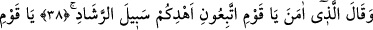
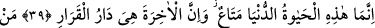
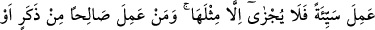
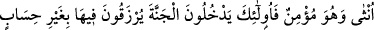
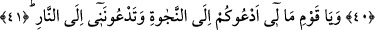
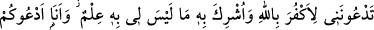
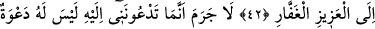
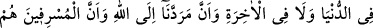
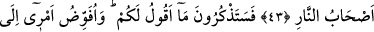
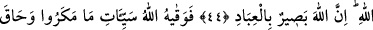
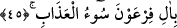
EY KAVMİM!
NEDİR BU HAL?
38. O îman eden kimse: Ey kavmim! dedi, siz bana uyun, sizi doğru yola
götüreceğim.
39. Ey kavmim! Şüphesiz bu dünya hayatı, geçici bir eğlencedir. Ama ahiret,
gerçekten kalınacak yurttur.
40. Kim bir kötülük işlerse, onun kadar ceza görür. Kim de kadın veya erkek,
mümin olarak faydalı bir iş yaparsa işte onlar, cennete girecekler, orada onlara
hesapsız rızık verilecektir.
41. Ey kavmim! Nedir bu hal? Ben sizi kurtuluşa çağırıyorum, siz beni ateşe
çağırıyorsunuz.
42. Siz beni, Allah’ı inkâr etmeye ve hiç tanımadığım nesneleri O’na ortak
koşmaya çağırıyorsunuz. Ben ise sizi, azîz ve çok bağışlayan Allah’a davet
ediyorum.
43. Gerçek şu ki, sizin beni davet ettiğiniz şeyin dünyada da ahirette de davete
değer bir tarafı yoktur. Dönüşümüz Allah’adır, aşırı gidenler de ateş ehlinin
kendileridir.
44. Size söylediklerimi yakında hatırlayacaksınız. Ben işimi Allah’a havale
ediyorum. Şüphesiz Allah, kullarını çok iyi görendir.
45. Nihayet Allah, onların kurdukları tuzakların kötülüklerinden bu zatı korudu,